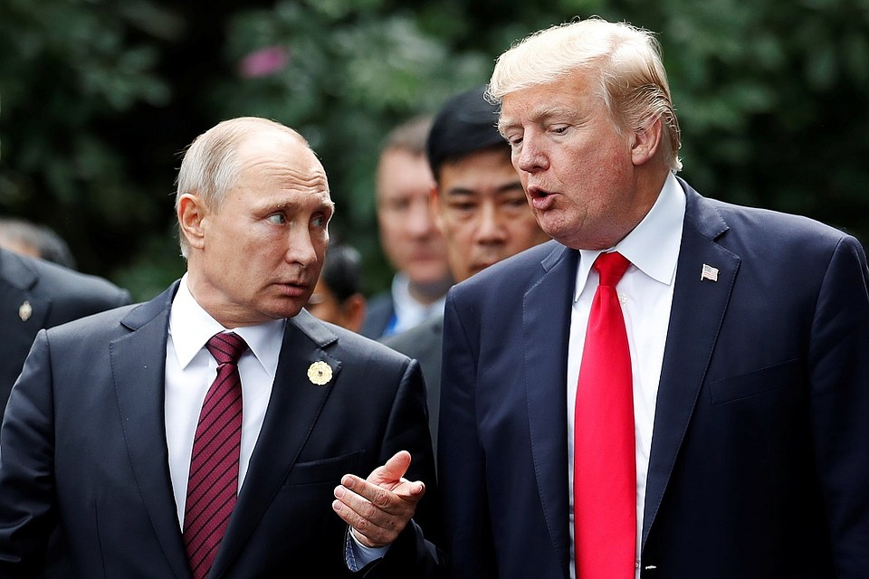
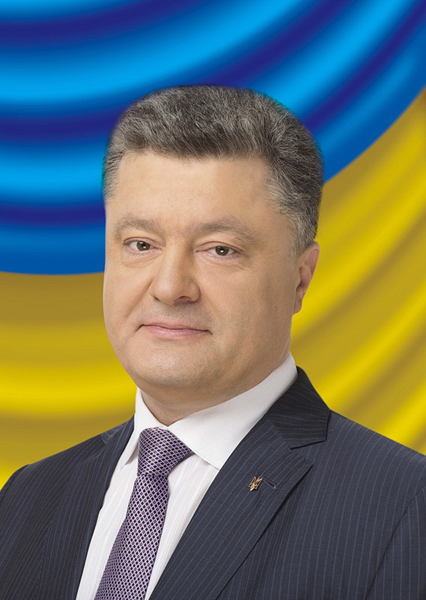
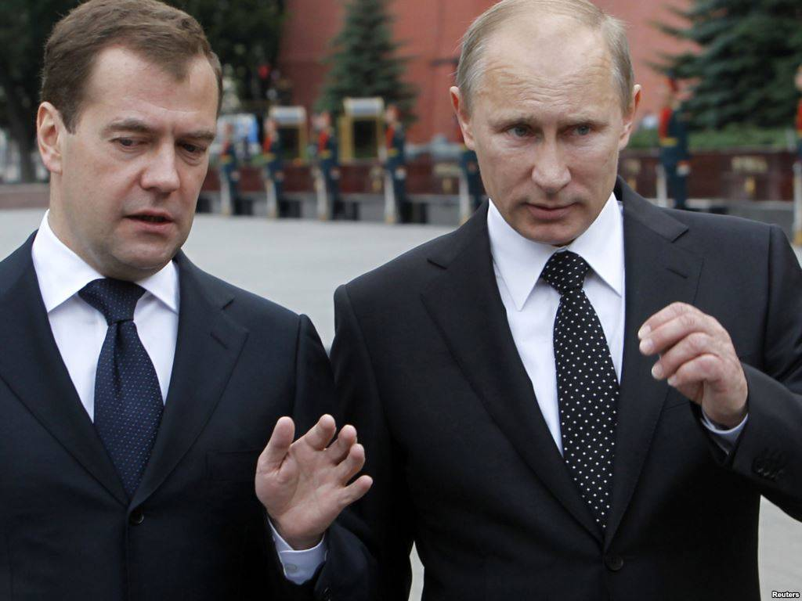

Свергнуть Путина можно только одним путем.
На главную
Заместитель генерального директора крымско-татарского телеканала АТР, журналист Айдер Муджабаев в первой части интервью «Апострофу» рассказал, чего ожидать от Владимира Путина в следующие шесть лет его правления, что может заставить президента России поменять свою политику, какие действия предпримет Кремль на Украине, почему не стоит возлагать надежд на российскую оппозицию, возглавляемую Алексеем Навальным, и как Запад может «удушить» режим, который сейчас правит в РФ.
«Апостроф»: Путин официально заступил на очередной срок президента России. На ваш взгляд, какую политику будет проводить Кремль? Айдер Муджабаев: Ту же самую, что всегда проводил. У Путина нет ни одной причины менять свою политику. У него все получается, я не вижу у него никаких особых проблем. Он захватил Крым, захватил и удерживает часть Восточной Украины. Санкции, конечно, влияют, но они очень малы по сравнению с общим объемом экономики и по сравнению с теми деньгами, которые страны Европейского Союза отдают за газ и нефть. Эти санкции упрощенно выглядят так: на тебе 100 гривен, а гривну я себе оставлю, накажу тебя.  По большому счету у Путина все получается, народ его любит, народ достаточно сытый, особенно в городах. Он воюет со всем миром: «Мы одни против проклятого Запада». И в идеологическом плане у него все нормально. В общем, я пока у него проблем не вижу. Я, конечно, понимаю, что это все плохо закончится. Но пока мир усилий не приложил, чтобы Путин начал менять свою политику, он будет продолжать то, что делает. — А когда это может плохо закончиться?
— Когда введут эмбарго на газ и на нефть. Ровно с этого момента все закончится у Владимира Владимировича. Эта страна живет за счет западных денег. Современная Россия — это содержанка Западной Европы. Как только содержанку перестанут содержать, она станет нищенкой. А что происходит с нищей Россией, мы знаем по 80-90-м годам: очереди за едой, гуманитарная помощь, идут на все условия Запада, тут же проходит какой-то верховой переворот, уже никто лидера не защищает, потому что он не приносит добычу в пещеру. И все так и будет, если не будет войны.
— Войны с кем?
— В первую очередь с Украиной, конечно, потому что она наиболее лакомый кусок для путинского менталитета, ведь без Украины империя невозможна.
— Россия же ведь не ведет открытых войн.
— Зачем вести открытую? Они тут содержат практически все телекомпании, имеют кучу своих агентов. Вот такой сейчас гибридный этап войны, который начала ощущать на себе Европа. Посмотрите, что сейчас говорят чиновники в Германии и во Франции: до них дошло, что идет направленное информационное вторжение. Здесь то же самое — вялотекущая война на востоке, оккупация Крыма, информационная война внутри страны с расчетом на то, что на следующих выборах придет к власти более приемлемый для Москвы человек. Они этого не скрывают сильно, говорят даже: «Нам нужен на Украине человек в качестве президента, который заложит основы для смены курса». Смена курса — это капитуляция под лозунгами мира, консервация ситуации на востоке, как в Молдавии с Приднестровьем. А Крым просто забыть. Ритуальные завывания о том, что Крым — это Украина, из уст наших пропагандистов, если их так можно назвать, всем надоели, потому что по сравнению с российскими они страшно неэффективны. Вот такая идея у России. Но, я думаю, так не выйдет по многим причинам.
— Вы имеете в виду, что у России не получится продвинуть своего кандидата на выборах на Украине?
— Да, я думаю, у них не получится своего кандидата продвинуть.
— А кто мог быть таким кандидатом?
— Я не могу таких ярлыков вешать, но я думаю, что есть как минимум два-три кандидата, с которыми они смогут договориться о мире [на Донбассе].
— Оппоблок?
— Не только Оппоблок. Есть у Владимира Владимировича давние политические партнеры, с которыми можно решать вопросы, которые ни разу его не критиковали лично, что для него очень важно. Вообще очень легко отличить по-настоящему антироссийского политика от не по-настоящему. Для российской системы власти, для Путина очень важно, чтобы его лично не оскорбляли. Если украинский политик лично не говорит о Путине очень жестких вещей, будьте спокойны, значит, человек к диалогу готов. Так эта система устроена.
— У нас многие политики имели контакт с Путиным.
— Но не все имели очень близкие. Не все с ним деньги делили, например, а это сакрально.
— Юлия Владимировна — одна из тех, кого всегда вспоминают в таких случаях.
— Но и кроме нее есть. Слушайте, у нас тут с российским бизнесом столько связано, а весь российский бизнес связан с властью, так что тут могут выскочить партии из любого угла. Мы же до конца не знаем, кто есть конечным бенефициаром партии, телекомпании и так далее.
— А что вы думаете о российской оппозиции, об Алексее Навальном? Они хоть в чем-то сильны или это карманная оппозиция?
— Нет, они, конечно, ни в чем не сильны. Это карманная бестолковая оппозиция. Навальный свою роль выполнил в российской истории. Это сейчас никто не признает, за поребриком будут в меня кидаться. Но пройдет пару лет — и все, что я говорю, станет ясно. Навальный низвел российскую оппозицию со стотысячных маршей против войны с Украиной времен Бориса Немцова до тысячи человек, среди которых даже нет участников тех акций. Тысячу человек молодежи, которых он выводит на площади, тут же забирают, сажают — и на этом все прекрасное заканчивается. Есть же разница? Значит, что-то не так в этом королевстве.
— Это разочарование?
— Тут много чего. Это страх, вполне реальный, осязаемый страх...